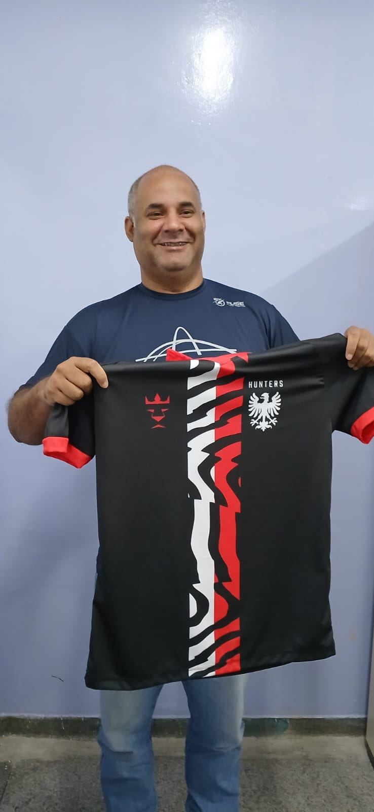

Hunters perde o jogo de Ida.
Hunters perde o jogo de Ida fora de casa. Jogando fora de casa, Hunters perde de 10x4 para o El River.

Treinador fala sobre os próximos desafios
O treinador da Hunters destacou a importância de jogar bem em casa. Professor está confiando no elenco para uma bela virada em casa.

Preparação intensa para o Derby
A equipe intensifica os treinos para conseguir a virada.

Camisa 10 está determinado.
O camisa 10 da Hunters, Arthur Cerqueira. Acredita na virada e fala: "Em casa a história é diferente, nunca perdemos uma partida lá. Podem se preparar River, faremos vocês de bonecas."